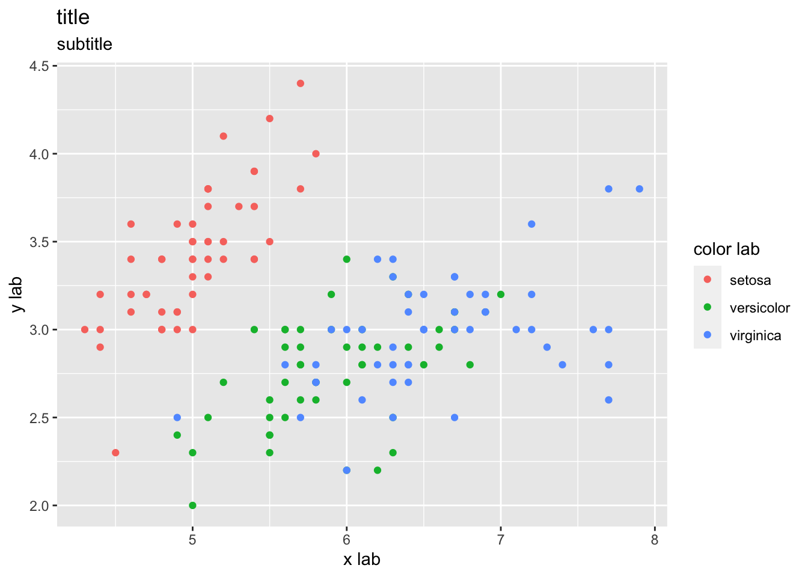
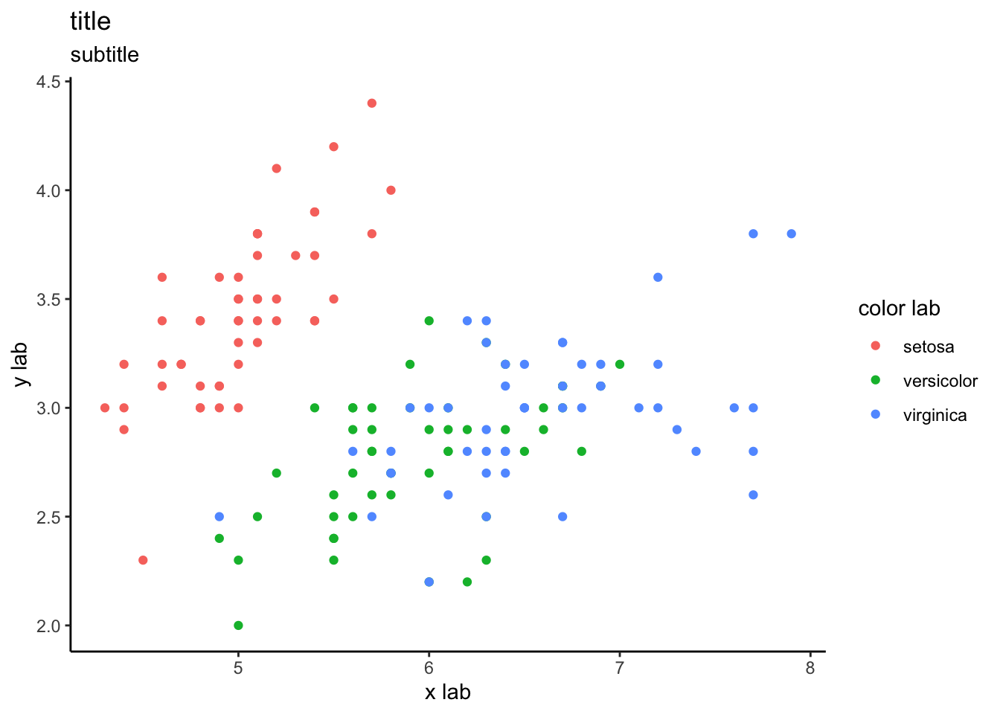
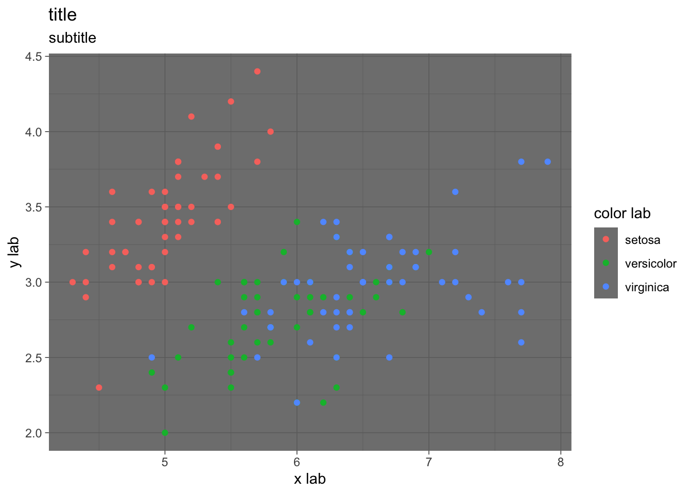
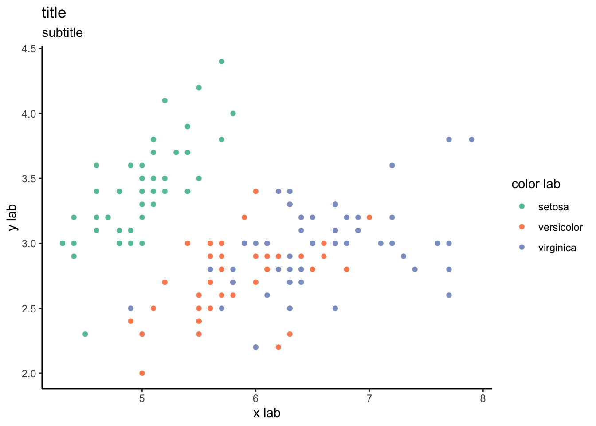

6 להפוך את הגרף שלי ליפהיפה
ניתן לשמור אוביקט ggplot2 בשם, ואז להוסיף לאוביקט השמור שכבות עיצוביות נוספת. זה מה שאדגים בפרק הזה. נתחיל בלשמור את הגרף שעבדנו עליו בפרקים הקודמים בשם
my_plot <-
ggplot(iris) +
aes(x = Sepal.Length, y = Sepal.Width, color = Species) +
geom_point()
my_plot
6.1 טקסט
my_plot_2 <-
my_plot +
labs(
title = "title",
subtitle = "subtitle",
x = "x lab",
y = "y lab",
color = "color lab"
)
my_plot_2
6.2 תמות עיצוביות מוכנות מראש
my_plot_2 +
theme_classic()
my_plot_2 +
theme_dark()
6.3 יצירת תמות בעצמנו
בלה בלה בלה
6.4 צבעים
my_plot_2 +
theme_classic() +
scale_color_brewer(palette = "Set2")
6.5 עיצוב הצירים
בלה בלה בלה